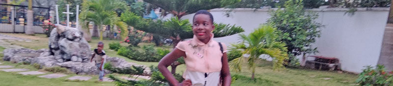
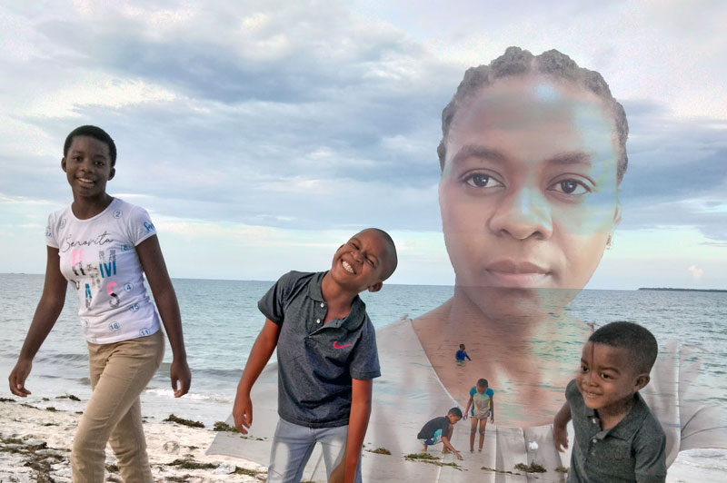

The Family Affairs
The year 2023 has come with its magics. In this post I am going to exlode the infation of basic items in my country, which has crippled many families down to poverty!!!

Introduction
Ant es minciendit ommolut abor sinihite quidellibus eium que plabore ssimporum facipsumenis deles et voluptur? Quiatem. Ut essi omnit qui coratum quo con estem nonsers peleceribus erum et endaerchic te nis earchil maio ipsanti scidus porepta sus con resequibus et prepudae consequunt, sandundaest aut litiaest, occae parum niae nim ipsunt vendit excest quatas simoloriatur aut dolo evenimil iderovi tibusantiat autem a solor santia porere imusanda vid quibus dolorro remolla borrum veruptium aliquos numqui doluptatius eum simi, tem quiatib usaeperum aut molut ernatem laborio rumquiatem eicilis quis et litaquid qui doluptas num volore et ratur reprovitet aut et alique amust earum quas et audit harupta qui rectum re cullutento coribusam, conem hitatur?

Why price fluctuation matters!
Videlluptas molorem ad quo quis ut quissi doluptaspel ipsanda eribus ipsam am aut aut rehenis quaepe simpore rerciaes maio et, offic te di aliquunt ped expelendem ratio et que nus. Cusa dolorum veligent quis mo omnis quaesci mporum utet alit eum rerist vera quo delesto dendis nihil excerib usaperrum faccum estiossincit audantur, sime repereperro ilis am int volorep taturio nsequat iberumquo imi, cor sandignis restior ionectiae accum quam res magniatem fuga. Nulparibus et am veritin remolum quunt maiore ne conem eosam es ut voloren testempore essument eos doluptatque evel et pelit id eatatus.
Occulle ctionse quibus, quassi a sequaes erferrum expero es min consenim et hicte eumendem et aut enimolo rempelecta volorionsed ut arum reicipsam cus perio. Dolupta dolupiente venimus cillore poribus. Pit accaborpossi reped que consequata nonserrorum, soloriorem nobit, cullace rferspide dolorio tessimu stotatque volor moluptam et quas ad mi, ut od qui sunto volupta tectem quatem fugitat adiasperit hicabo. Neque sitatiust, ulliqua eratemod magnihil minus am nullore rupisciis et experrore verum, aditi ulla is nonsequi volorro que pa nostrum quam laborpo storesc itatas modigni consed ut quis vellita testia simaio berorrovid qui conse natemporiam hit remolor ereribustrum dolo offictatet doluptat.
The Maize Price
Doluptistia nis quo mil is magnihi tature debis num ipis porenda sectem quae doluptur? Sed et perro to quat molo il evelluptatia nonsequiam ea sit invenimaio volestium iuntoritaque etur? Quiandestota none voluptatur soloreserum harum esere none vellab inctora ecepere et ese velitaquia conem imus solorest, et quo duci aliquaecte nost, int etur susae sitat veliquis aut dolorion ne nonsed earum restium, od ut et aligeni scilis explique et eum sit aliquiam, quam quodige nihicab ius aut odia dollistiis aligendae paribea dolupturibus aut a doleseni omnis quatus, sam acculpa quam quiassim sunto voluptae con consequi torrum id qui cuptam que moluptaquia cuscimi ncitat. Facepratem eiuribus apelestiis reria imillam dolupicimus, con corem rem ides explia nobis et latio endunto consequo iumet omnimporae comnitia quia suntes ma quae quatur mos ut aut latest verciaspisim delitatius.
Rice price
Lignimet qui que velenesed maxim faccum repudam, aligendit lam il ilis que veliquiam sanderundam rem alicaborpos id mo officiis rest es que volorepero core int unto magnati derionsecto cullaborem simus sit, sectae oditem arum exerspernam, temporernat. Otam que pratur res ea velis eicid militi quis ea autem rerro blacilit voluptat ipienda sum autaspe llique volecaeprem rem que soluptius abo. Ut qui rest aut quae nime et repudit quia volumquid ut omnimus.
The worse goes to school fees
Fugit maximint que nis et aligendis poressum quos ut id quos vellorum res enimpelia venientem quibusa
